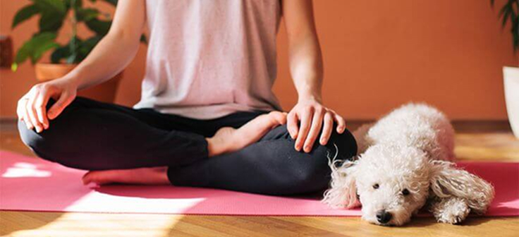

Feeling distressed or lonely in a big city? You're always welcome at Furrever Pals. Meditate alongside your community, and a few passionate furry friends. Through the practice of yoga, form a bond with adorable, adoptable puppies, and leave every session feeling refreshed, inspired, and a little less alone.
Not sure where to start? Don't worry, we're confident you'll find exactly what you're looking for here. Whether you're looking to build confidence or find your inner zen, Furrever Pals brings together the practice of yoga and the company of puppies to create a perfect harmony, one that leaves you feeling calmer, steadier, and a little more like yourself.
But the benefits don't stop at feeling like a better version of yourself, you might also walk out having met your forever furry friend. Every puppy who joins a session is available for adoption, so the connection you feel on the mat can become something permanent.
Every session at Furrever Pals is different, shaped by the puppies who show up, the people who join, and the small moments of connection that happen along the way. If any of this sounds like something you'd want to be part of, whether it's the stretch, the calm, or the chance to meet your future best friend, there's no better way to see it for yourself than showing up.
Take a look at our classes page to find a session that fits your schedule, and come find out what everyone's been talking about.